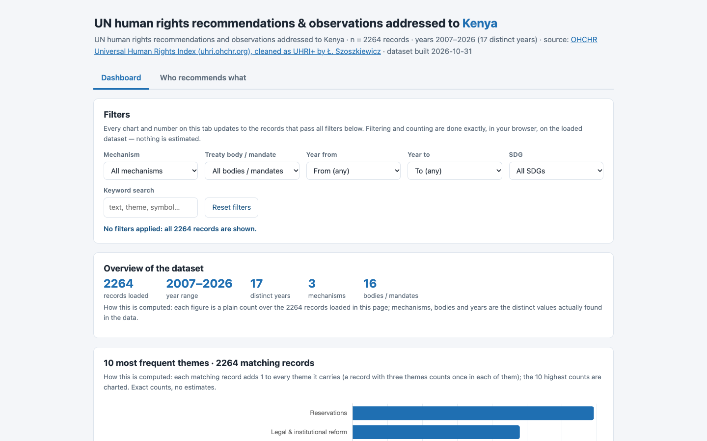
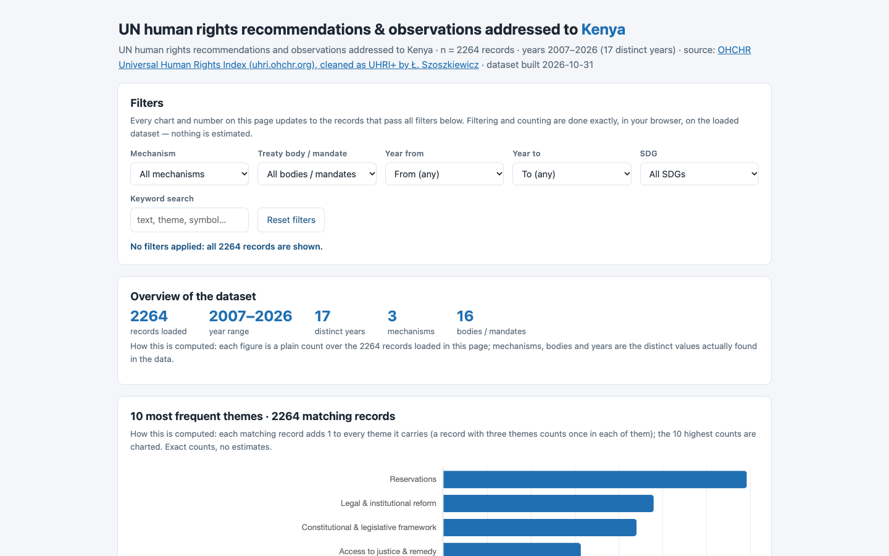
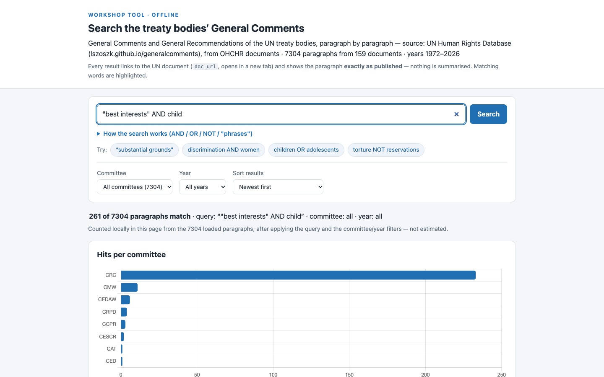
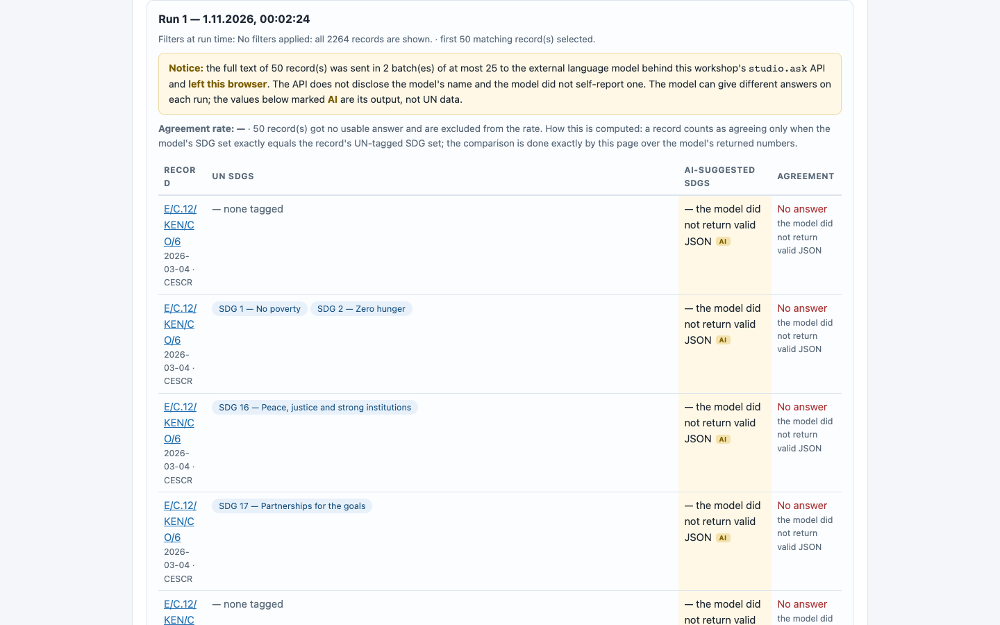
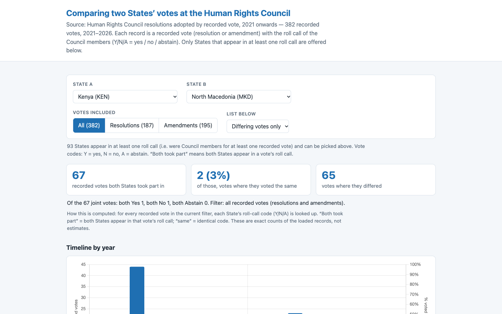

8/8 · 93.1 s · $0.041 · 380 lines
all checks passed

7/7 · 71.6 s · $0.037 · 643 lines
all checks passed

6/6 · 84.4 s · $0.039 · 552 lines
all checks passed

8/8 · 140.7 s · $0.061 · 470 lines
all checks passed

7/7 · 120.8 s · $0.056 · 589 lines
all checks passed

6/6 · 158.1 s · $0.058 · 391 lines
all checks passed